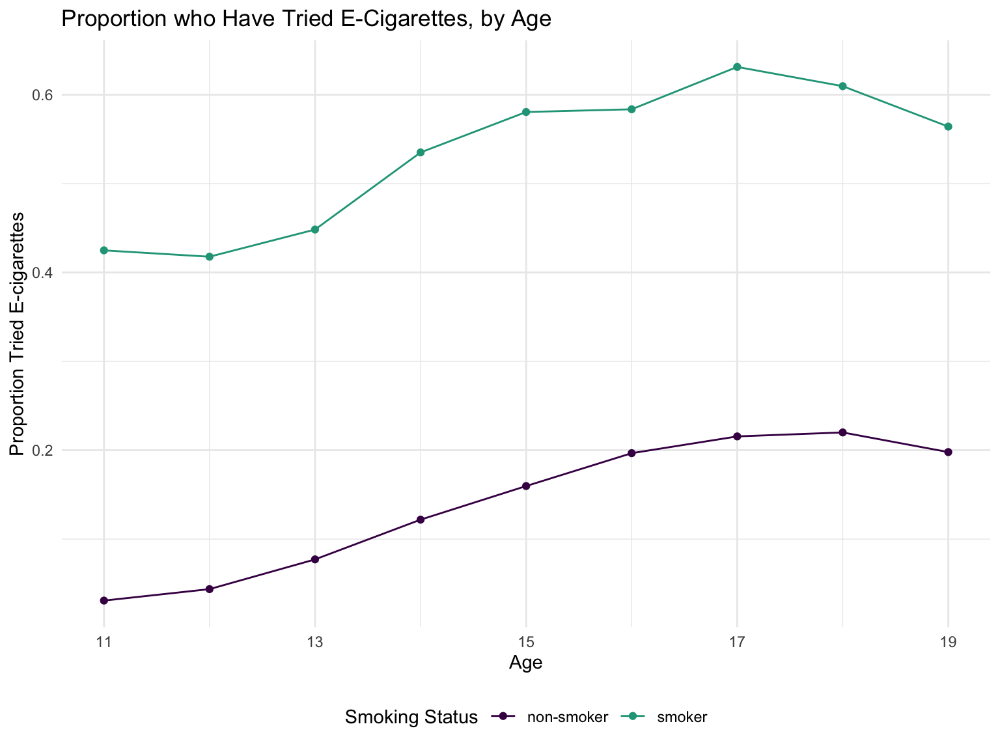
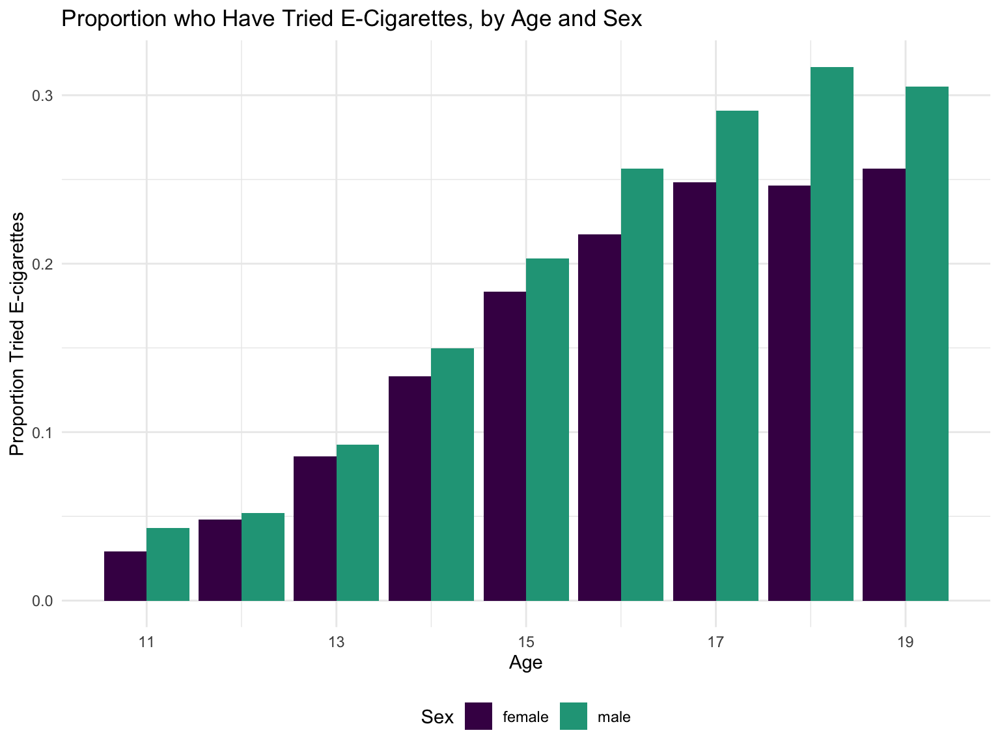

Analysis
lost variables: ecigs_past_month, ads_ecigs, harm_ecigs, age_first_ecig, reasons_ecigs
library(tidyverse)## ── Attaching packages ─────────────────────── tidyverse 1.2.1 ──## ✔ ggplot2 3.2.1 ✔ purrr 0.3.2
## ✔ tibble 2.1.3 ✔ dplyr 0.8.3
## ✔ tidyr 1.0.0 ✔ stringr 1.4.0
## ✔ readr 1.3.1 ✔ forcats 0.4.0## ── Conflicts ────────────────────────── tidyverse_conflicts() ──
## ✖ dplyr::filter() masks stats::filter()
## ✖ dplyr::lag() masks stats::lag()library(srvyr)##
## Attaching package: 'srvyr'## The following object is masked from 'package:stats':
##
## filterecig_data = read.csv("./Data/ecig_data.csv") Logistic Model
tbd
Ad Viewing
| Viewing Rate of Internet E-Cig Ads | Avg days Consuing of E-Cig Use |
|---|---|
| never | 1.04 |
| rarely | 1.06 |
| sometimes | 1.07 |
| most of the time | 1.13 |
| always | 1.38 |
Timeline
Does electronic cigarette use differ across year and sex? 
Has the perception of harmfulness of electronic cigarettes compared to cigarettes changed over time? 
Has the frequency of electronic cigarette and cigarette use changed over time? 
Are cigarette smokers more likely to try electronic cigarettes? 
Demographics
Does electronic cigarette use differ across age and sex? 
Which races use e-cigs the most?
ecig_data %>%
mutate(
ecigs_past_month = as.numeric(ecigs_past_month),
) %>%
select(ecigs_past_month, race, weight) %>%
mutate(race = fct_relevel(race, c("native hawaiian / other pacific islander", "american indian / alaska native", "white", "hispanic", "black", "asian"))) %>%
drop_na() %>%
group_by(race) %>%
summarize(ecig_use = round(weighted.mean(ecigs_past_month, as.numeric(weight)), digits = 3)) %>%
ggplot(aes(x = race, y = ecig_use)) +
geom_bar(stat = "identity") +
coord_flip() +
scale_x_discrete(name= "", labels = c("Native Hawaiian", "American Indian", "White", "Hispanic", "Black", "Asian")) +
labs(y = "Monthly E-Cig Use", title = "E-Cig Use across Races")